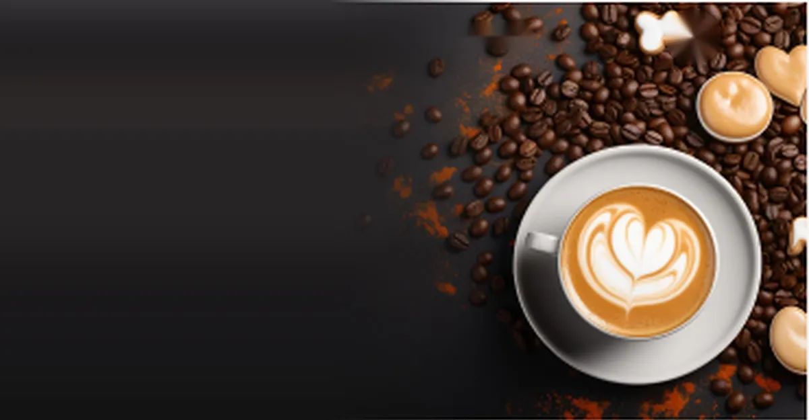
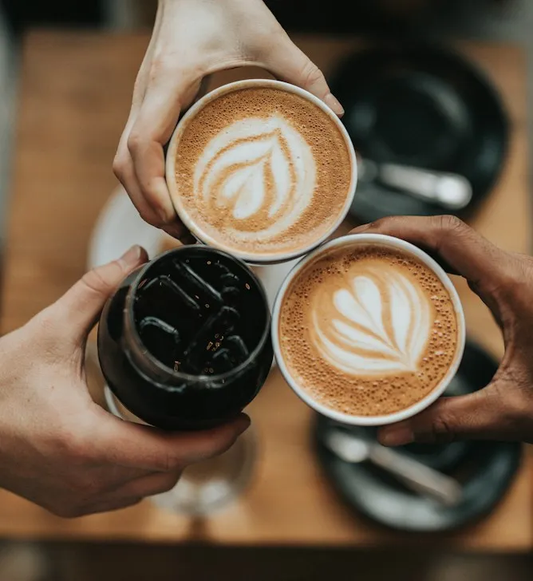

Problema
Traducir una dirección visual editorial a una página extensa, consistente y accesible sin usar JavaScript, frameworks ni backend.
Una experiencia editorial para café

Landing estática de una página y nueve secciones para la cafetería ficticia Coffea, construida exclusivamente con HTML5 semántico y CSS3.
Traducir una dirección visual editorial a una página extensa, consistente y accesible sin usar JavaScript, frameworks ni backend.
Construir una experiencia mobile-first con productos, categorías, promociones, testimonios y newsletter, cuidando foco y navegación por teclado.

Arquitectura CSS por capas y componentes BEM, imágenes responsive, carruseles con scroll-snap y breakpoints documentados en 768, 1024 y 1440 px.
Resultado: landing de 9 secciones sin JavaScript ni frameworks.